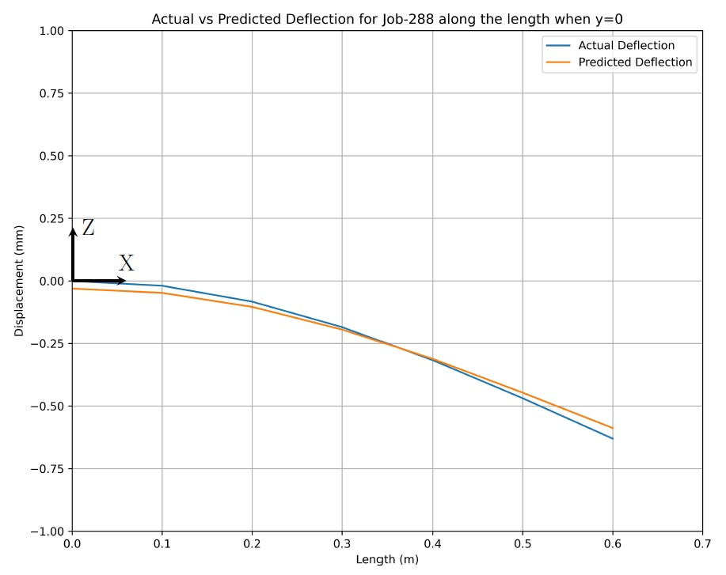
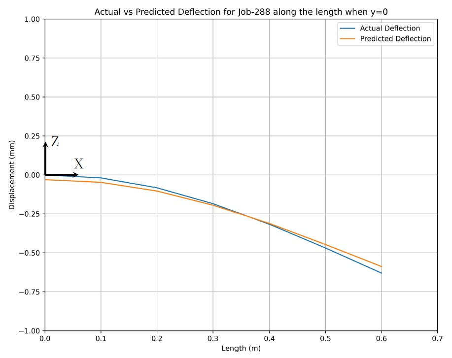
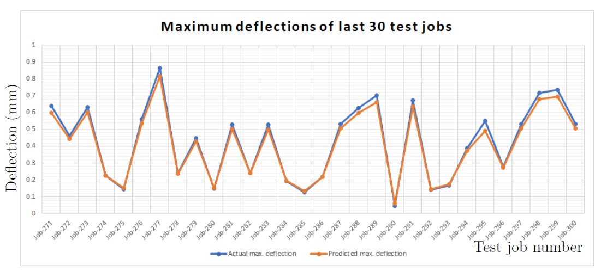

Mini-thesis & student assistant
Institute of Structural Mechanics & Lightweight Design (SLA), RWTH Aachen
Task
| Topic | Prediction of the deflection of a shell structure using an artificial neural network |
| Approach | - Defining the models and running calculations in ABAQUS. - Developing a new artificial neural network to predict the results and comparing them with the Abaqus results. |
Defining 300 jobs in ABAQUS and running calculations
Developing and training the neural network
Extracting the outputs from trained neural network
Problem setup

Result of one job
 


Results of last 30 jobs
Tools
About the company
For almost 70 years, RWTH Aachen's Institute of Structural Mechanics and Lightweight Construction (SLA) has been a pioneer in the study and instruction of lightweight construction. The institute, which specializes in optimizing aeronautical structures, has broadened its scope to include biomedical engineering, sports equipment, and mobility applications. SLA's research encompasses modeling, optimization, and digitalization of structures with a special emphasis on structural integrity. It takes a distinctive approach that combines analytics, testing, and numerical methods. With the help of a team of more than fifty employees, cutting-edge production facilities, and a cutting-edge testing lab, SLA works with partners to create novel lightweight solutions and validate them through stringent testing.
Institute Link: Institute of Structural Mechanics & Lightweight Design (SLA)